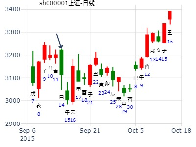

对应股票是子化父回头克的类型。在冲父会有点涨。还要看用神是否旬空。
婚姻卦：升之师，升虚邑，杨晓娟测婚姻。
官动化子。标准克夫卦。
公历起卦时间：2010年1月16日12时37分 (手工指定)
干支：己丑年 丁丑月 丙寅日 甲午时 （日空：戌亥）
震宫：地风升 坎宫：地水师 (归魂)
六神 伏神 本 卦 变 卦
青龙 官鬼癸酉金 ▅▅ ▅▅ 官鬼癸酉金 ▅▅ ▅▅ 应
玄武 父母癸亥水 ▅▅ ▅▅ 父母癸亥水 ▅▅ ▅▅
白虎 子孙庚午火 妻财癸丑土 ▅▅ ▅▅ 世 妻财癸丑土 ▅▅ ▅▅
腾蛇 官鬼辛酉金 ▅▅▅▅▅ ○→ 子孙戊午火 ▅▅ ▅▅ 世
勾陈 兄弟庚寅木 父母辛亥水 ▅▅▅▅▅ 妻财戊辰土 ▅▅▅▅▅
朱雀 妻财辛丑土 ▅▅ ▅▅ 应 兄弟戊寅木 ▅▅ ▅▅
1。官动化子，男方主动提出离婚。
2。世财下伏子，测主跟孩子生活在一起。
3。两财两官，双方均有意中人？
九三：升虚邑。象曰：升虚邑，无所疑也。
方式：转盘奇门 - 超接置闰法
时间：2010年01月16日12时38分
干支：己丑 丁丑 丙寅 甲午
旬空：午未 申酉 戌亥 辰巳
冬至：2009年12月22日01时40分
小寒：2010年01月05日19时00分
本节气上元第一天为：2010年1月14日甲子
大寒：上元第3天 甲午时旬首为辛
阳遁三局 值符天心落六宫 值使开门落六宫
┌──────┬──────┬──────┐
│ 白虎 │ 玄武 │ 九地 │
│ 杜门 己│ 景门 丁│庚 死门 乙│
│ 天辅 己│ 天英 丁│禽 天芮 乙│
├──────┼──────┼──────┤
│ 六合 │ │ 九天 │
│ 伤门 戊│ │ 惊门 壬│
│ 天冲 戊│ 庚│ 天柱 壬│
├──────┼──────┼──────┤
│ 太阴 │ 螣蛇 │ 值符 │
│ 生门 癸│ 休门 丙│ 开门 辛│
│ 天任 癸│ 天蓬 丙│ 天心 辛│
└──────┴──────┴──────┘
出生：夏 年 性别：女 占事：中小板在2015年的走势如何
公历起卦时间：2015年1月2日22时0分 (手工指定)
干支：甲午年 丙子月 戊寅日 癸亥时 （日空：申酉）
震宫：地风升 坎宫：地水师 (归魂)
朱雀 官鬼癸酉金 ▅▅ ▅▅ 官鬼癸酉金 ▅▅ ▅▅ 应
青龙 父母癸亥水 ▅▅ ▅▅ 父母癸亥水 ▅▅ ▅▅
玄武 子孙庚午火 妻财癸丑土 ▅▅ ▅▅ 世 妻财癸丑土 ▅▅ ▅▅
白虎 官鬼辛酉金 ▅▅▅▅▅ ○→ 子孙戊午火 ▅▅ ▅▅ 世
腾蛇 兄弟庚寅木 父母辛亥水 ▅▅▅▅▅ 妻财戊辰土 ▅▅▅▅▅
勾陈 妻财辛丑土 ▅▅ ▅▅ 应 兄弟戊寅木 ▅▅ ▅▅
酉虽空，此处太弱论冲走而大涨。丑值月大涨。辰月合官鬼，却是大震荡开始。辰为财。巳虽为子孙，易冲亥水，露伏神寅木，或夺荡或跌。
午月大涨。未月世应月破，跌。酉跌。
升之师，首创证券1月16日一周。金玉堂。
时间: 2023-01-16 14时06分
干支: 壬寅年癸丑月甲戌日辛未时 (旬空: 申酉 )
地风升 地水师(归魂)
六神 伏神 本 卦 变 卦
玄武 ▅▅ ▅▅ 官鬼酉金 ▅▅ ▅▅ 官鬼酉金 应
白虎 ▅▅ ▅▅ 父母亥水 ▅▅ ▅▅ 父母亥水
腾蛇 子孙午火▅▅ ▅▅ 妻财丑土 世 ▅▅ ▅▅ 妻财丑土
勾陈 ▅▅▅▅▅ 官鬼酉金 Ｏ→ ▅▅ ▅▅ 子孙午火 世
朱雀 兄弟寅木▅▅▅▅▅ 父母亥水 ▅▅▅▅▅ 妻财辰土
青龙 ▅▅ ▅▅ 妻财丑土 应 ▅▅ ▅▅ 兄弟寅木
主帖标题: 浅谈2.11日大盘走势
2011年 2月 10日 15时 0分 (起卦方式：手动指定)
干支：辛卯年 庚寅月 丙申日 丙申时 日空亡：辰巳
神煞：驿马－寅 桃花－酉 日禄－巳 贵人－酉，亥
震宫：地风升 坎宫：地水师 (归魂)
六神 伏神 本 卦 变 卦
青龙 官鬼酉金 ▅▅ ▅▅ 官鬼酉金 ▅▅ ▅▅ 应
玄武 父母亥水 ▅▅ ▅▅ 父母亥水 ▅▅ ▅▅
白虎 子孙午火 妻财丑土 ▅▅ ▅▅ 世 妻财丑土 ▅▅ ▅▅
螣蛇 官鬼酉金 ▅▅▅▅▅ ○→ 子孙午火 ▅▅ ▅▅ 世
勾陈 兄弟寅木 父母亥水 ▅▅▅▅▅ 妻财辰土 ▅▅▅▅▅
朱雀 妻财丑土 ▅▅ ▅▅ 应 兄弟寅木 ▅▅ ▅▅
50ETF年卦 幸福的伟兄
公历起卦时间：2019年2月5日8时48分 (电脑自动)
干支：己亥年 丙寅月 癸酉日 丙辰时 （日空：戌亥）
震宫：地风升 坎宫：地水师 (归魂)
六神 伏神 本 卦 变 卦
白虎 官鬼癸酉金 ▅▅ ▅▅ 官鬼癸酉金 ▅▅ ▅▅ 应
腾蛇 父母癸亥水 ▅▅ ▅▅ 父母癸亥水 ▅▅ ▅▅
勾陈 子孙庚午火 妻财癸丑土 ▅▅ ▅▅ 世 妻财癸丑土 ▅▅ ▅▅
朱雀 官鬼辛酉金 ▅▅▅▅▅ ○→ 子孙戊午火 ▅▅ ▅▅ 世
青龙 兄弟庚寅木 父母辛亥水 ▅▅▅▅▅ 妻财戊辰土 ▅▅▅▅▅
玄武 妻财辛丑土 ▅▅ ▅▅ 应 兄弟戊寅木 ▅▅ ▅▅
升：元亨，用见大人，勿恤，南征吉。彖曰：柔以时升，巽而顺，刚中而应，是以大亨。用见大人，勿恤；有庆也。 南征吉，志行也。象曰：地中生木，升；君子以顺德，积小以高大。
九三：升虚邑。象曰：升虚邑，无所疑也。
年冲高回落走势，变卦师，败仗，出新低。
主帖标题: 2.8 大盘
公历起卦时间：2021年2月8日7时48分
干支：辛丑年 庚寅月 丁亥日 甲辰时 （日空：午未）
震宫：地风升 坎宫：地水师 (归魂)
六神 伏神 本 卦 变 卦
青龙 官鬼癸酉金 ▅▅ ▅▅ 官鬼癸酉金 ▅▅ ▅▅ 应
玄武 父母癸亥水 ▅▅ ▅▅ 父母癸亥水 ▅▅ ▅▅
白虎 子孙庚午火 妻财癸丑土 ▅▅ ▅▅ 世 妻财癸丑土 ▅▅ ▅▅
螣蛇 官鬼辛酉金 ▅▅▅▅▅ ○→ 子孙戊午火 ▅▅ ▅▅ 世
勾陈 兄弟庚寅木 父母辛亥水 ▅▅▅▅▅ 妻财戊辰土 ▅▅▅▅▅
朱雀 妻财辛丑土 ▅▅ ▅▅ 应 兄弟戊寅木 ▅▅ ▅▅
官鬼弱而化空，官不护盘。世应丑土，月上弱，日上仅为有气。
父母逢日。父兄旺。小涨小跌。
马后炮：午未空，有意思，子冲实就大涨。
主帖标题: 测卯日（2.2）沪市大盘
公历起卦时间：2023年2月1日7时50分 (按农历时间起卦)
立春：2023年02月04日10时47分
干支：壬寅年 癸丑月 庚寅日 庚辰时 （日空：午未）
震宫：地风升 坎宫：地水师 (归魂)
六神 伏神 本 卦 变 卦
螣蛇 官鬼癸酉金 ▅▅ ▅▅ 官鬼癸酉金 ▅▅ ▅▅ 应
勾陈 父母癸亥水 ▅▅ ▅▅ 父母癸亥水 ▅▅ ▅▅
朱雀 子孙庚午火 妻财癸丑土 ▅▅ ▅▅ 世 妻财癸丑土 ▅▅ ▅▅
青龙 官鬼辛酉金 ▅▅▅▅▅ ○→ 子孙戊午火 ▅▅ ▅▅ 世
玄武 兄弟庚寅木 父母辛亥水 ▅▅▅▅▅ 妻财戊辰土 ▅▅▅▅▅
白虎 妻财辛丑土 ▅▅ ▅▅ 应 兄弟戊寅木 ▅▅ ▅▅
主题：3.18-3.22日橡胶1309的走势 23110
癸巳 乙卯 辛巳 甲午 日空:申酉 时空:辰巳 四大空亡:水)
(2013/03/16 11:02:49)
地风升 地水师
腾蛇 官鬼酉金 ∥ 官鬼酉金 ∥ 应
勾陈 父母亥水 ∥ 父母亥水 ∥
子孙午火：朱雀 妻财丑土 ∥ 震 妻财丑土 ∥
青龙 官鬼酉金 ○ 子孙午火 ∥ 坎
兄弟寅木：玄武 父母亥水 ／ 妻财辰土 ／
白虎 妻财丑土 ∥ 应 兄弟寅木 ∥
酉金旬空，出空即受克，所以大涨。
主帖标题: [原创]预测上海大盘2007年4月12日星期四走势
公历时间：2007年4月12日9时27分 星期四
干支：丁亥年 甲辰月 丙子日 癸巳时 (旬空：申酉）
地风升 地水师(归魂)
六神 伏神 本 卦 变 卦
青龙 ▅▅ ▅▅ 官鬼酉金 ▅▅ ▅▅ 官鬼酉金 应
玄武 ▅▅ ▅▅ 父母亥水 ▅▅ ▅▅ 父母亥水
白虎 子孙午火▅▅ ▅▅ 妻财丑土 世 ▅▅ ▅▅ 妻财丑土
腾蛇 ▅▅▅▅▅ 官鬼酉金 Ｏ→ ▅▅ ▅▅ 子孙午火 世
勾陈 兄弟寅木▅▅▅▅▅ 父母亥水 ▅▅▅▅▅ 妻财辰土
朱雀 ▅▅ ▅▅ 妻财丑土 应 ▅▅ ▅▅ 兄弟寅木
占问事宜：2016.04.05--19上证指数趋势
公历：2016年4月5日7时30分，星期二。
干支：丙申年 壬辰月 丁巳日 甲辰时 (卦身：酉)
主变卦 地风升(震宫) 之 地水师(坎宫) [空亡:子、丑]
青龙 ▅▅ ▅▅ 官鬼癸酉金 ▅▅ ▅▅ 官鬼癸酉金 应
玄武 ▅▅ ▅▅ 父母癸亥水 ▅▅ ▅▅ 父母癸亥水
白虎 子孙庚午火 ▅▅ ▅▅ 妻财癸丑土 世 ▅▅ ▅▅ 妻财癸丑土
螣蛇 ▅▅▅▅▅○官鬼辛酉金 ▅▅ ▅▅ 子孙戊午火 世
勾陈 兄弟庚寅木 ▅▅▅▅▅ 父母辛亥水 ▅▅▅▅▅ 妻财戊辰土
朱雀 ▅▅ ▅▅ 妻财辛丑土 应 ▅▅ ▅▅ 兄弟戊寅木
2019-04-18-300322未来二周。 升之师。官化子。
时间: 2019-04-18 11时19分
干支: 己亥年戊辰月乙酉日壬午时 (旬空: 午未 )
地风升 地水师(归魂)
六神 伏神 本 卦 变 卦
玄武 ▅▅ ▅▅ 官鬼酉金 ▅▅ ▅▅ 官鬼酉金 应
白虎 ▅▅ ▅▅ 父母亥水 ▅▅ ▅▅ 父母亥水
腾蛇 子孙午火▅▅ ▅▅ 妻财丑土 世 ▅▅ ▅▅ 妻财丑土
勾陈 ▅▅▅▅▅ 官鬼酉金 Ｏ→ ▅▅ ▅▅ 子孙午火 世
朱雀 兄弟寅木▅▅▅▅▅ 父母亥水 ▅▅▅▅▅ 妻财辰土
青龙 ▅▅ ▅▅ 妻财丑土 应 ▅▅ ▅▅ 兄弟寅木
辰月酉日见大顶。
每日一卦测大盘”—— 2014年6月19日周四走势。
公历起卦时间：2014年6月19日0时33分
干支：甲午年 庚午月 辛酉日 戊子时 （日空：子丑）
震宫：地风升 坎宫：地水师 (归魂)
六神 伏神 本 卦 变 卦
腾蛇 官鬼癸酉金 ▅▅ ▅▅ 官鬼癸酉金 ▅▅ ▅▅ 应
勾陈 父母癸亥水 ▅▅ ▅▅ 父母癸亥水 ▅▅ ▅▅
朱雀 子孙庚午火 妻财癸丑土 ▅▅ ▅▅ 世 妻财癸丑土 ▅▅ ▅▅
青龙 官鬼辛酉金 ▅▅▅▅▅ ○→ 子孙戊午火 ▅▅ ▅▅ 世
玄武 兄弟庚寅木 父母辛亥水 ▅▅▅▅▅ 妻财戊辰土 ▅▅▅▅▅
白虎 妻财辛丑土 ▅▅ ▅▅ 应 兄弟戊寅木 ▅▅ ▅▅
虽是官化子，但世应皆空，大跌。
且是酉官鬼值日，大跌
占事：7月1日期指1507的走势 方式：手工指定
公历：2015年7月1日9时7分 星期三 北京时间
干支：乙未年 壬午月 戊寅日 丁巳时 旬空：辰巳 申酉 （申酉） 子丑
震：地风升 坎：地水师(归魂)
朱雀 ▅▅ ▅▅ 官鬼癸酉金 ▅▅ ▅▅ 官鬼癸酉金 应
青龙 ▅▅ ▅▅ 父母癸亥水 ▅▅ ▅▅ 父母癸亥水
玄武 子孙庚午火 ▅▅ ▅▅ 妻财癸丑土 世 ▅▅ ▅▅ 妻财癸丑土
白虎 ▅▅▅▅▅ 官鬼辛酉金 ○→ ▅▅ ▅▅ 子孙戊午火 世
螣蛇 兄弟庚寅木 ▅▅▅▅▅ 父母辛亥水 ▅▅▅▅▅ 妻财戊辰土
勾陈 ▅▅ ▅▅ 妻财辛丑土 应 ▅▅ ▅▅ 兄弟戊寅木
申酉空，卯日冲实大跌。

主帖标题: 今天想起一个半年卦,拿来大家看
主题：7月5日大盘的走势
丙申 甲午 戊子 丙辰 (午未空) 丙申年六月初二(2016/07/05 08:02:57)
地风升 地水师
朱雀 官鬼辛酉 ∥ 官鬼辛酉 ∥ 应
青龙 父母癸亥 ∥ 父母癸亥 ∥
子孙戊午：玄武 妻财癸丑 ∥ 震 妻财癸丑 ∥
白虎 官鬼辛酉 ○ 子孙戊午 ∥ 坎
兄弟甲寅：腾蛇 父母癸亥 ／ 妻财丙辰 ／
勾陈 妻财癸丑 ∥ 应 兄弟甲寅 ∥
本日丑土为多方逢日合，元神午火冲实而出。
官鬼动化子孙，暗示为主力操作 空方力量分析：虽强而不出
今日大盘震荡收阳 盘后分析：妙在一个震荡上
此卦为弟子学习教材案例二留存，谢谢
这个是梅花小孩测日卦实际收红升
主帖标题: 今天想起一个半年卦,拿来大家看
求测人：2016大盘
起卦方式：时间起卦 占问事宜：下半年
起卦公历：2016年7月5日7时27分(北京时间)。
起卦干支： 丙申年 甲午月 戊子日 丙辰时 [空亡:午、未]
主变卦 地风升(震宫) 之 地水师(坎宫)
朱雀 ━ ━ 官鬼酉金 ━ ━ 官鬼酉金 应
青龙 ━ ━ 父母亥水 ━ ━ 父母亥水
玄武 子孙午火 ━ ━ 妻财丑土 世 ━ ━ 妻财丑土
白虎 ━━━○官鬼酉金 ━ ━ 子孙午火 世
螣蛇 兄弟寅木 ━━━ 父母亥水 ━━━ 妻财辰土
勾陈 ━ ━ 妻财丑土 应 ━ ━ 兄弟寅木
这个是叫XXX18的人的半年卦。
马后炮：旬空经典。起卦日本来冲飞子孙，但是旬空又旺，结果冲实。不让原局失败。但是子月就不论冲实，论午火月破，大跌。
主帖标题: 深证下周
000037周升，先小后上辰日短买
公历：2022年07月08日21时14分
国际易经网六爻排盘系统 http://www.iqing.net
四柱：壬寅年 丁未月 壬戌日 辛亥时 (日空：子丑)
卦名：震宫4世卦：地风升 之 坎宫3世归魂卦：地水师
卦身：主卦丑爻持世，卦身在二爻；阴爻持世，月卦身在酉
白虎 ▅ ▅ 官鬼癸酉金 ▅ ▅ 官鬼癸酉金 应
螣蛇 ▅ ▅ 父母癸亥水 ▅ ▅ 父母癸亥水
勾陈 子孙庚午火 ▅ ▅ 妻财癸丑土 世 ▅ ▅ 妻财癸丑土
朱雀 ▅▅▅ 官鬼辛酉金 ○→ ▅ ▅ 子孙戊午火 世
青龙 兄弟庚寅木 ▅▅▅ 父母辛亥水 ▅▅▅ 妻财戊辰土
玄武 ▅ ▅ 妻财辛丑土 应 ▅ ▅ 兄弟戊寅木
占事：今日大盘 卦者：悟道喜悦
起卦方式：手动摇卦 易经股市论坛 www.yijingstock.com 在线排盘系统
公历时间：2014年8月11日6时57分
干 支：甲午年 壬申月 甲寅日 丁卯时 旬空：辰巳 戌亥 (子丑) 戌亥
震宫：地风升 坎宫：地水师（归魂）
六神 伏 神 【本 卦】 【变 卦】
玄武 ▄▄ ▄▄ 官鬼癸酉金 ▄▄ ▄▄ 官鬼癸酉金 应
白虎 ▄▄ ▄▄ 父母癸亥水 ▄▄ ▄▄ 父母癸亥水
螣蛇 子孙庚午火 ▄▄ ▄▄ 妻财癸丑土 世 ▄▄ ▄▄ 妻财癸丑土
勾陈 ▄▄▄▄▄ 官鬼辛酉金 O-> ▄▄ ▄▄ 子孙戊午火 世
朱雀 兄弟庚寅木 ▄▄▄▄▄ 父母辛亥水 ▄▄▄▄▄ 妻财戊辰土
青龙 ▄▄ ▄▄ 妻财辛丑土 应 ▄▄ ▄▄ 兄弟戊寅木
2022-08-14 815周大盘。升之师。
时间: 2022-08-14 2时25分
干支: 壬寅年戊申月己亥日乙丑时 (旬空: 辰巳 )
地风升 地水师(归魂)
勾陈 ▅▅ ▅▅ 官鬼酉金 ▅▅ ▅▅ 官鬼酉金 应
朱雀 ▅▅ ▅▅ 父母亥水 ▅▅ ▅▅ 父母亥水
青龙 子孙午火▅▅ ▅▅ 妻财丑土 世 ▅▅ ▅▅ 妻财丑土
玄武 ▅▅▅▅▅ 官鬼酉金 Ｏ→ ▅▅ ▅▅ 子孙午火 世
白虎 兄弟寅木▅▅▅▅▅ 父母亥水 ▅▅▅▅▅ 妻财辰土
腾蛇 ▅▅ ▅▅ 妻财丑土 应 ▅▅ ▅▅ 兄弟寅木
此卦重点不是纠结本周，而是重点提醒后面酉日暴跌风险。
升之师，官化子，鬼来送财笑呵呵。
姓名：梅花冷人 女
占事:10月8号两市大盘走势
起卦方式：手动摇卦 xuanyi排盘 http://**.xuanyi.com )
公历时间：2010年9月30日12时1分
干 支：庚寅年 乙酉月 癸未日 戊午时
旬 空：午未 午未 申酉 子丑
震宫：地风升 坎宫：地水师（归魂）
六神 伏 神 【本 卦】 【变 卦】
白虎 ▄▄ ▄▄ 官鬼癸酉金 ▄▄ ▄▄ 官鬼癸酉金 应
螣蛇 ▄▄ ▄▄ 父母癸亥水 ▄▄ ▄▄ 父母癸亥水
勾陈 子孙庚午火 ▄▄ ▄▄ 妻财癸丑土 世 ▄▄ ▄▄ 妻财癸丑土
朱雀 ▄▄▄▄▄ 官鬼辛酉金 O-> ▄▄ ▄▄ 子孙戊午火 世
青龙 兄弟庚寅木 ▄▄▄▄▄ 父母辛亥水 ▄▄▄▄▄ 妻财戊辰土
玄武 ▄▄ ▄▄ 妻财辛丑土 应 ▄▄ ▄▄ 兄弟戊寅木
震荡缠绵盘上，小中阳。早盘有V形小震荡，之后盘上。
参考。补充一下，大盘明天有可能站上2700，收在2710左右。参考。
起卦hour:2015年9月13日19时29分
时间: 2015-09-13
干支: 乙未年乙酉月壬辰日 (旬空: 午未 )
地风升 地水师(归魂)
六神 伏神 本 卦 变 卦
白虎 ▅▅ ▅▅ 官鬼酉金 ▅▅ ▅▅ 官鬼酉金 应
腾蛇 ▅▅ ▅▅ 父母亥水 ▅▅ ▅▅ 父母亥水
勾陈 子孙午火▅▅ ▅▅ 妻财丑土 世 ▅▅ ▅▅ 妻财丑土
朱雀 ▅▅▅▅▅ 官鬼酉金 Ｏ→ ▅▅ ▅▅ 子孙午火 世
青龙 兄弟寅木▅▅▅▅▅ 父母亥水 ▅▅▅▅▅ 妻财辰土
玄武 ▅▅ ▅▅ 妻财丑土 应 ▅▅ ▅▅ 兄弟寅木

曲美家居12个交易日涨跌
时间: 2024-09-05
干支: 甲辰年壬申月壬申日 (旬空: 戌亥 )
地风升 地水师(归魂)
六神 伏神 本 卦 变 卦
白虎 ▅▅ ▅▅ 官鬼酉金 ▅▅ ▅▅ 官鬼酉金 应
腾蛇 ▅▅ ▅▅ 父母亥水 ▅▅ ▅▅ 父母亥水
勾陈 子孙午火▅▅ ▅▅ 妻财丑土 世 ▅▅ ▅▅ 妻财丑土
朱雀 ▅▅▅▅▅ 官鬼酉金 Ｏ→ ▅▅ ▅▅ 子孙午火 世
青龙 兄弟寅木▅▅▅▅▅ 父母亥水 ▅▅▅▅▅ 妻财辰土
玄武 ▅▅ ▅▅ 妻财丑土 应 ▅▅ ▅▅ 兄弟寅木
主帖标题: 2010年 10月08日 上指 模拟予想
起卦时间：2010年10月07日23时56分
起卦农历：庚寅年八月三十日子时
干支：庚寅年 乙酉月 辛卯日 戊子时 旬空：午未
六神 伏神 震宫：地风升 坎宫：地水师（归魂）
【本 卦】 【变 卦】
滕蛇 ▅▅ ▅▅ 官鬼癸酉金 ▅▅ ▅▅ 官鬼癸酉金 应
勾陈 ▅▅ ▅▅ 父母癸亥水 ▅▅ ▅▅ 父母癸亥水
朱雀 子孙庚午火 ▅▅ ▅▅ 妻财癸丑土 世 ▅▅ ▅▅ 妻财癸丑土
青龙 ▅▅▅▅▅ 官鬼辛酉金 ○→ ▅▅ ▅▅ 子孙戊午火 世
玄武 兄弟庚寅木 ▅▅▅▅▅ 父母辛亥水 ▅▅▅▅▅ 妻财戊辰土
白虎 ▅▅ ▅▅ 妻财辛丑土 应 ▅▅ ▅▅ 兄弟戊寅木
2013年11月7日
干支：癸巳年 壬戌月 丁丑日 甲辰时 （日空：申酉）
神 煞：驿马－亥 桃花－午 日禄－午 贵人－酉，亥
震宫：地风升 坎宫：地水师 (归魂)
六神 伏神 本 卦 变 卦
青龙 官鬼癸酉金 ▅▅ ▅▅ 官鬼癸酉金 ▅▅ ▅▅ 应
玄武 父母癸亥水 ▅▅ ▅▅ 父母癸亥水 ▅▅ ▅▅
白虎 子孙庚午火 妻财癸丑土 ▅▅ ▅▅ 世 妻财癸丑土 ▅▅ ▅▅
腾蛇 官鬼辛酉金 ▅▅▅▅▅ ○→ 子孙戊午火 ▅▅ ▅▅ 世
勾陈 兄弟庚寅木 父母辛亥水 ▅▅▅▅▅ 妻财戊辰土 ▅▅▅▅▅
朱雀 妻财辛丑土 ▅▅ ▅▅ 应 兄弟戊寅木 ▅▅ ▅▅
未日大跌。酉日大涨。（莫非未日合绊午火，不克官，大跌）
而酉日出空大涨。（财空被兄克一样，出空就挨宰，让子孙大胜，从而大涨。不空的话，则值日就跌）
中国神华12月涨跌。升之师。官化子，可惜子孙月破无力。
时间: 2022-11-26 14时16分
干支: 壬寅年辛亥月癸未日 (旬空: 申酉 )
地风升 地水师(归魂)
六神 伏神 本 卦 变 卦
白虎 ▅▅ ▅▅ 官鬼酉金 ▅▅ ▅▅ 官鬼酉金 应
腾蛇 ▅▅ ▅▅ 父母亥水 ▅▅ ▅▅ 父母亥水
勾陈 子孙午火▅▅ ▅▅ 妻财丑土 世 ▅▅ ▅▅ 妻财丑土
朱雀 ▅▅▅▅▅ 官鬼酉金 Ｏ→ ▅▅ ▅▅ 子孙午火 世
青龙 兄弟寅木▅▅▅▅▅ 父母亥水 ▅▅▅▅▅ 妻财辰土
玄武 ▅▅ ▅▅ 妻财丑土 应 ▅▅ ▅▅ 兄弟寅木
测海通证券12月走势如何？?（黄秋云钱币卦）?公历起卦时间：2013年12月3日10时35分 (手工指定)
干支：癸巳年 癸亥月 癸卯日 丁巳时 （日空：辰巳）
震宫：地风升 坎宫：地水师 (归魂)
六神 伏神 本 卦 变 卦
白虎 官鬼癸酉金 ▅▅ ▅▅ 官鬼癸酉金 ▅▅ ▅▅ 应
腾蛇 父母癸亥水 ▅▅ ▅▅ 父母癸亥水 ▅▅ ▅▅
勾陈 子孙庚午火 妻财癸丑土 ▅▅ ▅▅ 世 妻财癸丑土 ▅▅ ▅▅
朱雀 官鬼辛酉金 ▅▅▅▅▅ ○→ 子孙戊午火 ▅▅ ▅▅ 世
青龙 兄弟庚寅木 父母辛亥水 ▅▅▅▅▅ 妻财戊辰土 ▅▅▅▅▅
玄武 妻财辛丑土 ▅▅ ▅▅ 应 兄弟戊寅木 ▅▅ ▅▅
九三：升虚邑。象曰：升虚邑，无所疑也。
大多数升之师是涨，卦的组合官化子是优秀组合，而此卦大跌。估计主要是流月太差。子月流月： 一是让午火子孙月破，二是冲散子孙戊午火，无力克官。
测海通证券12月走势如何？ （黄秋云钱币卦）
公历起卦时间：2013年12月3日10时35分 (手工指定)
干支：癸巳年 癸亥月 癸卯日 丁巳时 （日空：辰巳）
震宫：地风升 坎宫：地水师 (归魂)
六神 伏神 本 卦 变 卦
白虎 官鬼癸酉金 ▅▅ ▅▅ 官鬼癸酉金 ▅▅ ▅▅ 应
腾蛇 父母癸亥水 ▅▅ ▅▅ 父母癸亥水 ▅▅ ▅▅
勾陈 子孙庚午火 妻财癸丑土 ▅▅ ▅▅ 世 妻财癸丑土 ▅▅ ▅▅
朱雀 官鬼辛酉金 ▅▅▅▅▅ ○→ 子孙戊午火 ▅▅ ▅▅ 世
青龙 兄弟庚寅木 父母辛亥水 ▅▅▅▅▅ 妻财戊辰土 ▅▅▅▅▅
玄武 妻财辛丑土 ▅▅ ▅▅ 应 兄弟戊寅木 ▅▅ ▅▅
九三：升虚邑。象曰：升虚邑，无所疑也。
大多数升之师是涨，卦的组合官化子是优秀组合，而此卦大跌。估计主要是流月太差。
子月流月： 一是让午火子孙月破，二是冲散子孙戊午火，无力克官。